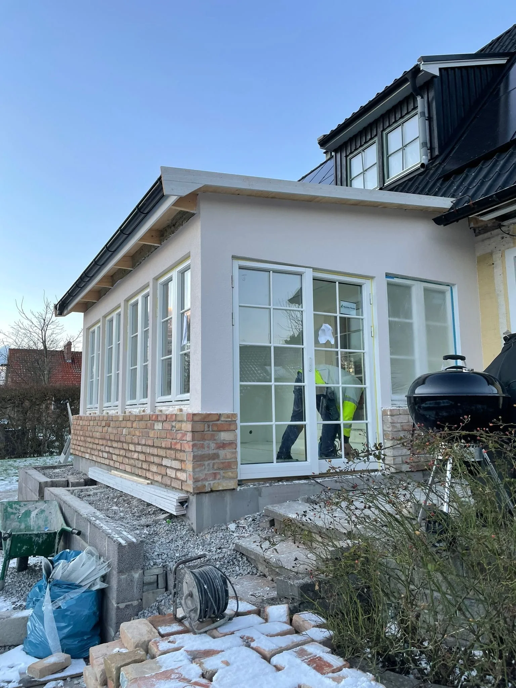
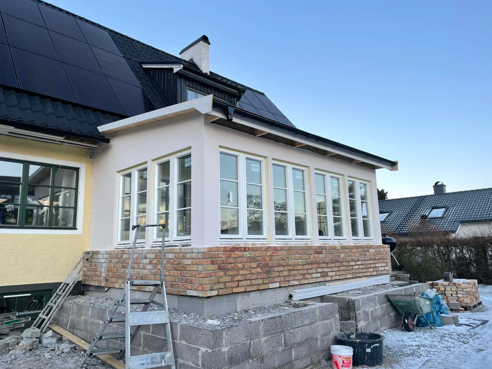
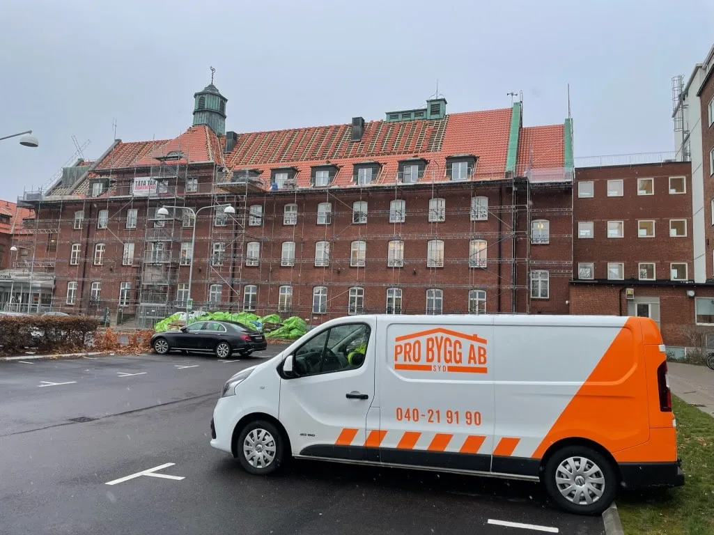

Från din idé.
Till ditt hem.
Byggföretag i Malmö och Skåne. Tak, badrum, kök och totalentreprenad med omsorg om detaljerna.
★★★★★5,0 / 510 omdömen på Reco
Malmö & hela SkåneKostnadsfritt hembesökHelhetslösningar inom bygg
Byggt för livet.
Gjort med omsorg.
Ett nytt badrum. Ett tryggt tak. Eller plats för något större.
Vi på Pro Bygg Syd hjälper privatpersoner och företag att förverkliga sina byggplaner. Från den första idén till genomförandet, med Malmö som utgångspunkt och uppdrag i hela Skåne.
Lär känna Pro Bygg SydRätt hantverk för dina planer.
Bygga ut, renovera eller ta hand om det som redan finns. Vi hjälper dig med helheten.

Totalentreprenad
En kontakt för hela projektet.
Tillbyggnad
Mer plats för livet.
Badrumsrenovering
Ett rum att trivas i.
Takläggning
Omsorg om hela huset.
Vi samlar kompetenserna som ditt projekt behöver, från planering till genomförande.
Hantverket talar
för sig självt.
Se alla referenser 
En kontakt.
Från första samtalet.
Vi hjälper privatpersoner och företag med små och stora byggprojekt. Med Malmö som utgångspunkt arbetar vi i hela Skåne.
Vi går igenom dina önskemål och samlar den kompetens som projektet behöver, från planering till genomförande.
Lär känna Pro Bygg SydKunderna berättar.
Läs alla omdömen på Reco★★★★★5,0 / 5
10 omdömen på Reco
”Tillbyggnaden blev precis som vi önskade.”
Inbjuden kund på Reco
”Hög kvalitet, bra kommunikation och ett fantastiskt slutresultat.”
Inbjuden kund på Reco
”Lyhörda, lösningsorienterade och prisvärda.”
Verifierad kund på Reco
Korta utdrag från Reco. Betyg och antal kontrollerade 18 november 2026.
En bra början
är ett samtal.
Du behöver inte ha en färdig plan. Några tankar, en bild eller en ritning räcker för att börja prata.
Ring 076-919 01 90Var arbetar ni?
Vi utgår från Malmö och arbetar i hela Skåne. Beskriv var ditt projekt finns så går vi igenom förutsättningarna.
Kostar ett hembesök något?
Vi erbjuder kostnadsfria hembesök och offerter. Kontakta oss för att boka en tid och beskriva vad du vill göra.
Kan ni ta hand om hela projektet?
Ja, vi erbjuder totalentreprenad och samordnar de yrkesgrupper som behövs. Omfattning och ansvar bestäms i offert och avtal.
Hur får jag ett pris?
Priset beror på omfattning, material och förutsättningar. Börja med att berätta om projektet, gärna med bilder och ungefärliga mått.